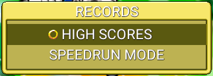
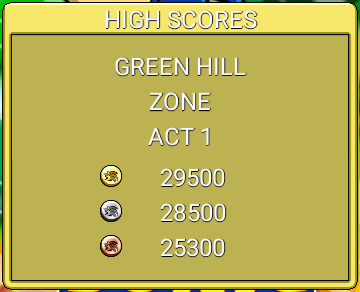
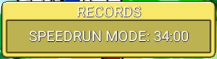
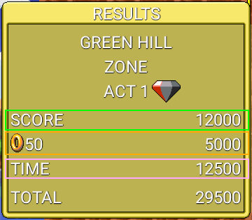
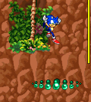
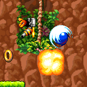
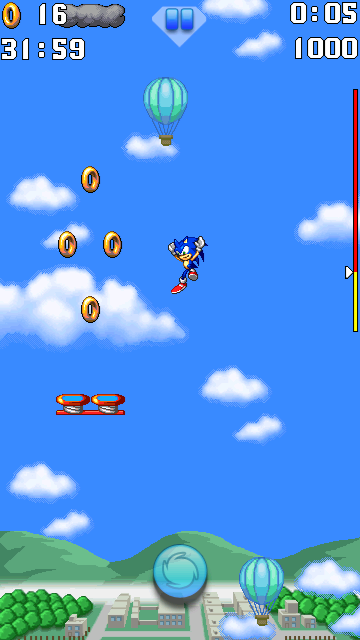
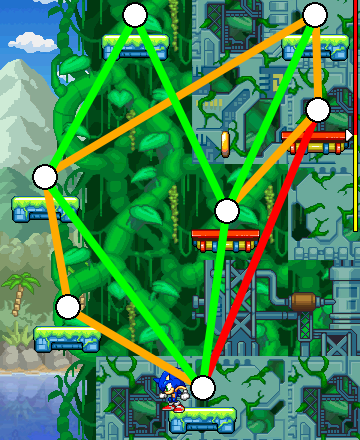
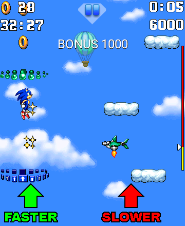
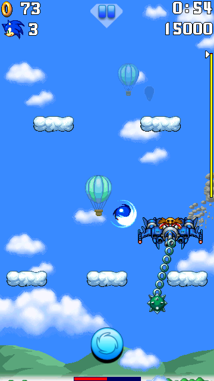

Description

The RECORDS menu is where you can find your best records.
There are 2 types of records: The HIGH SCORES and the SPEEDRUN MODE records.


The RECORDS menu is where you can find your best records.
There are 2 types of records: The HIGH SCORES and the SPEEDRUN MODE records.

The HIGH SCORES are the main type of records. They represent the biggest number of points of each stage you have played.
This menu contains stage record pages. Each page features the best 3 records.

The SPEEDRUN MODE record represents its time records after clearing all the stages in this game mode.
In this menu, there are 2 types of records: The one after clearing Cosmic Zone Act 3, and the other one after clearing Bonus Zone Act 3.

Befre explaining how to get the highest scores, let's talk about the score system of the stage results screen.

Green and blue hoops allow you to earn points by passing through them. The number of earned points is based on how to pass through a hoop. You can earn 200, 400, 600, 800 or 1000 points if you pass through a hoop from an edge to the center respectively.
To earn the biggest number of points, make sure to align yourself properly to the center of the hoops.

To earn the biggest number of points, you must look out at badniks.
Defeating badniks makes you earn 2000 points each. Therefore, don't miss out as much badniks as possible if you want the highest score.
In conclusion, here are the most to less important points to make the highest scores:

SPEEDRUN MODE is a new game mode since Sonic Jump Aniversary (v2.0.0). The goal of this mode is to clear all the stages all fast as possible.
In SPEEDRUN MODE, the life counter is replaced by a timer. Make sure to clear all the stages before the timer runs out to complete this game mode. If you have completed this mode, your time record will be saved in the SPEEDRUN MODE page of the RECORDS menu.
This section teaches you how to clear stages as fast as possible.

First of all, you can jump up quicker by reaching platforms that are at the same height as the character's jump and in your trajectory.
By doing so, you will take less time to land on platforms.
Landing on a platform too low, too high, or outside your jump trajectory make you lose time.

If you remember the location of the blue hoops, make sure to position yourself so you can have a chance to take them.
In a series of blue hoops, The rings can guide you where the next blue hoop is located. Sometimes, you have to move in zigzags to pass through a series of blue hoops.
Dr. Eggman's machines and spike obstacles are moving in patterns. Learn the patterns to attack the machine at the right time. Otherwise, you will get hit by the obstacles.

In some stages, Dr. Eggman is moving at the bottom of the area. When this happens, try to perform a double jump towards the machine around the same height.
Also, did you know you can actually deplete more health to Dr. Eggman's machines? To do so, perform a double jump towards the machine.